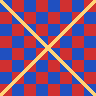

Yerel HTTP/HTTPS test sayfasi: HTML, CSS, JS ve resim render dogrulamasi.
Paragraf, kalin, italik, kod ve baglanti testleri.
| Ozellik | Durum |
|---|---|
| HTML | Test ediliyor |
| CSS | Test ediliyor |
| JS | Test ediliyor |
| PNG | Test ediliyor |
Bu bolum harici style.css dosyasi ile bicimlendirildi; yesil kart ve mavi baslik beklenir.
0
JS durumu: deneniyor

PNG gorseli test.png uzerinden yuklendi; kirmizi/mavi desen gorunmelidir.